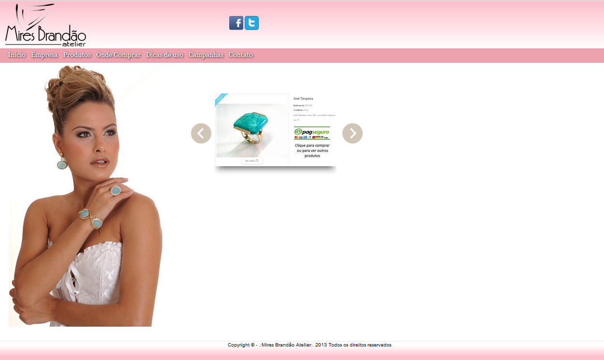
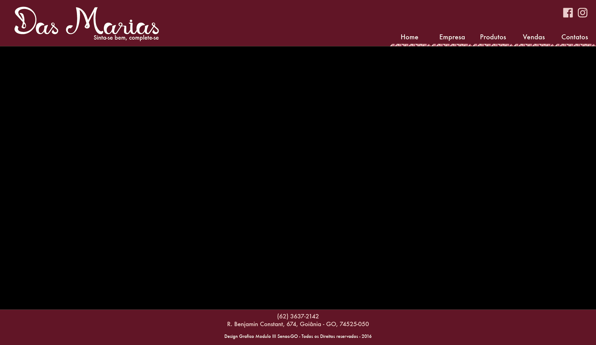

FACULDADE DE TECNOLOGIA SENAC GOIÁS
Curso Superior Tecnológico em Design Gráfico
Módulo III Noturno - 2016
Desenvolver um site web para a loja Das Maria Semi-joias, bem como também uma proposta de utilização de plataforma transmídia para divulgação de conteúdo relevante para a promoção da loja/marca.
Utilizar os conhecimentos adquiridos durante as aulas na criação de conteúdo multimídia e web para cliente real.
Para o desenvolvimento deste trabalho foi utilizado o conteúdo disponibilizado pela empresa Das Maria Semi-joias, assim como analise de similares e pesquisas bibliográficas.
Diante do atual estagio de desenvolvimento tecnológico, que causa profundas alterações nos hábitos de comunicação e consumo, as empresas precisam estar, cada vez mais atentas aos meios possíveis de alcançar e impactar os consumidores. Segundo Bertoncello e Crescetelli (2009) “o mundo digital vem transformando o dia-a-dia das pessoas e, praticamente, todos os setores da economia, na forma com que empresas, serviços e marcas estão se estabelecendo nessa nova configuração mercadológica”. Nesse contexto, a criação de um site web juntamente com o uso de mídias sociais mostra-se uma alternativa na busca de ganhar relevância frente a concorrência e estar em sintonia com os anseios dos clientes.
A loja “Das Marias Semijoias” faz parte de um mercado que movimentou em 2015, segundo o IBGM (Instituto Brasileiro de Gemas e Metais), mais de 11 bilhões de reais. Ainda, segundo o IBGM o Comércio Varejista de Joias e Relógios contava em 2014 com 18.303 estabelecimentos registrados. Com a utilização das mídias disponíveis, para a promoção de seus produtos, a empresa “Das Marias” terá mais oportunidades de manter-se competitiva e alcançar novos consumidos/mercados.
O desenvolvimento da interface e usabilidade para o site “Das Marias” partiu de uma pesquisa de similares, com o objetivo de identificar padrões e similaridade entre os sites web no mercado de; bijuterias e folheados, e joias. As amostras escolhidas foram os sites web das seguintes empresas: Mires Brandão (Figura 1), Wendel Joias (Figura 2), Francesca Romana Diana (Figura 3) e Antônio Bernardo (Figura 4).
A partir da analise, foi possível identificar as seguintes características:
O projeto segue a perspectiva de Design centrado no Design, em que segundo Kalbach (2009) “as decisões são tomadas a partir da visão pessoal do designer em relação ao mundo”. Neste contexto, o grupo de trabalho, optou por conceber o layout visando obter simplicidade estética (Figura 5), Nielsen (2007, p.116) chama a atenção sobre a importância de se evitar o uso de design rebuscado, “de fato, quanto menos objetos na página, maior a probabilidade de as pessoas os perceberem”. Os elementos decorativos aplicados ao layout derivam do logo Diamante e estão presentes; no menu, quando ativado e em recortes localizados nas imagens, formulário de contato (Figura 6, 7). As cores empregadas no site web foram selecionadas a partir da logo Diamante.
O modelo de navegação é estrutural (Kalbach, 2009) segundo o qual “existe apenas um conjunto de links, o qual prove acesso à informação, não existem links embutidos dentro do texto, nem funções de busca”. Procurou-se também, como orienta Nielsen (2007) nomear os rótulos navegacionais de forma a possibilitar uma melhor compreensão ao usuário e seguindo sua orientação de manter “os nomes dos links o mais curto e especifico possível a fim de maximizar a varredura visual”.
Os conteúdos similares/complementares foram dispostos em abas, dentro de uma mesma pagina, de maneira a proporcionar ao usuário, rápido acesso às informações correlatas, sem a necessidade de criar paginas exclusivas para os tópicos e assim, evitar também, paginas com excesso de conteúdo.
A navegação no site web e feita através de menu de links, horizontal, localizado na parte superior direita da pagina. O link da pagina aberta fica ativo, com cor diferente dos demais e sublinhado por uma barra derivada do logo Diamante.
Para a execução do funcionalidade menu ativo, foi utilizada uma estrutura condicional simples criando uma função que verifica os itens do menu um por um e compara os nomes com o nome da pagina atual, de forma que a pagina correspondente acrescente uma classe em seu item no menu.
Funcionalidade das abas de conteudo foi alcançada através de programação em Javascript que mostra o conteúdo 01 ao clicar na aba 01, e esconde o conteúdo 02; e mostra o conteúdo 02 ao clicar na aba dois e esconde o conteúdo 01, juntamente executa o comando de acrescentar uma classe na aba selecionada, para indicar onde o usuário está. A aba ativa mantem uma cor mais clara que a aba desativada, essa cor avança um pouco o interior a área do conteúdo em efeito gradiente.
Pra utilizar o layout do menu de forma responsiva e sem alterar ou dificultar sua funcionalidade, foi aplicado dois tipos de menus, o desktop e o mobile, visando melhor navegação ao usuário. Foi utilizado uma condição em Javascript, onde a resolução da tela onde é aberto o site ou quando redimensionado, se adapta, esconde, remove ou acrescenta alguma classe.
Para isso foram utilizadas 3 resoluções:
O Instagram foi escolhido para ser a mídia de divulgação dos produtos disponíveis para venda na loja. A escolha levou em consideração o fato, de que o Instagram conta com uma interface simplificada, o que possibilita maior destaque ao conteúdo publicado.
Diretrizes para postagens:
Escolhido para divulgação de ações promocionais. Escolhido devido às funções de compartilhamento, o que possibilita o uso da base de seguidores para promover a popularidade da loja.
Diretrizes para postagens:
A possibilidade de postagens com conteúdos mais densos, faz do blog o canal ideal para as postagens com dicas de moda, composição de looks, além de assuntos relacionados ao mundo fashion.
O acelerado desenvolvimento tecnológico, ao qual a nossa sociedade tem presenciado, esta causando profundas alterações nas relações sociais e interações entre os indivíduos. A tecnologia agora permite, ao individuo, ter uma postura ativa na criação e disseminação de conteúdo e formação de opinião nas redes sociais e ganha poder de mobilização através dessas novas mídias.
Porém o desenvolvimento é possibilitado pelo capitalismo, o qual, mantem sempre, a hegemonia em relação ao caminho que a processo de evolução deve ser seguir. Segundo Fontenelle apud Rifkin “o capitalismo enfrenta um novo desafio: ‘não há nada mais a comprar’... Restam poucos valores psíquicos que se podem tirar ao se ter dois ou três automóveis, meia dúzia de televisores e aparelhos de todo tipo para suprir todas as necessidades e desejos possíveis”. Portanto é preciso desenvolver novas formas de se obter lucro e manter a maquina do capitalismo, é necessário para isso criar novos desejos no consumidor. Nessa direção, Fontenelle apud Rifkin aponta que “o capitalismo está fazendo sua transição final para o capitalismo cultural plenamente desenvolvido, apropriando não só os significadores da vida cultural e das formas artísticas de comunicação que interpretam esses significadores, mas da experiência vivida também...” e que as empresas de mídia estão tomando a direção rumo a esse novo modelo mercadológico
Apesar do capitalismo fazer as escolhas que devem ser seguidas pelos consumidores, através da propaganda e marketing, é inegável o ganho do individuo em relação às suas próprias escolhas de consumo, o desenvolvimento tecnológico possibilita um numero maior de concorrentes, dando mais opções aos consumidores. Bartoncello e Crescetelli (2009) discorre sobre as transformações ocorridas pelo desenvolvimento tecnológico.
Ainda de acordo com Santos e Medeiros (2011) “a mutação do capitalismo produziu novas estratégias comerciais. Não vendem mais coisas. Agora vendem marcas, símbolos, imagens, significados, que podem ser apresentados em qualquer espaço estratégico e aos olhos de públicos específicos”.
O ritmo acelerado das transformações podem causar incertezas acerca dos resultados que advirão desse processo, mas as possibilidades abertas na forma de autoexpressão e escolhas dão poder ao individuo, desde que o mesmo, mantenha o senso critico em relação às mensagens de marketing emitidas pelos agentes do capitalismo, sob o prejuízo seu poder mobilizador e fazer escolhas já predefinidas pelo mercado.
PREMISSA
Personagem se arrumando.
ARGUMENTO
O slogam da Loja Das Marias Semi-joias, “Sinta-se bem, sinta-se completa” serve de inspiração conceitual para a produção do vídeo propaganda. A personagem encontra-se sentada frente a uma mesa e espelho. Ela veste peças de semi-joias/bijuterias em busca da combinação “perfeita”, em busca do bem estar com a própria aparência.
ROTEIRO
FADE IN
INT. SALA. NOITE
Imagens em close up e plano médio.
As personagens chegam e se sentado enfrente o espelho;
Escolhes os adornos de seu agrado que estão sobre a mesma;
Os experimentam os acessórios;
A personagem olha para espelho, “com uma expressão de duvida”;
Retira um dos acessórios que esta usado;
Em seguida faz outras tentativas de combinações;
mostras frase em forma de legenda animada “sinta-se bem ….”;
Ate encontrar os acessórios certos, a personagem olha para o espelho com “expressão de satisfação”;
A personagem se levanta da cadeira mostras frase em forma de legenda animada “sinta-se completa”;
Mostra a animação com logotipo Das Marias
FADE OUT
THE AND